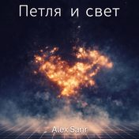
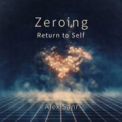

Електроніка
71 трек11 альбомів
Петля и свет
- 1Entry Into Exitтекст →
- 2Through Sparksтекст →
- 3Return from Nonexistenceтекст →
- 4Four Sidesтекст →
- 5Acceptance. Pain as a Guideтекст →
- 6Strength Without Forceтекст →
- 7The Returnтекст →
- 8Risingтекст →
- 9Spirit of the Marketтекст →
- 10Home Beyond Timeтекст →
- 11Backbone of Silent Choicesтекст →
- 12Life Between Entry Pointsтекст →
- 13Afterword. Gratitudeтекст →
- 14Testament of the Livingтекст →

Zeroing. Return to Self
- 1Вход в выходтекст →
- 2Сквозь искрытекст →
- 3Возвращение из небытиятекст →
- 4Четыре сторонытекст →
- 5Принятие. Боль как проводниктекст →
- 6Сила без силытекст →
- 7Возвращениетекст →
- 8Пробуждениетекст →
- 9Дух биржитекст →
- 10Дом вне временитекст →
- 11Хребет молчаливых решенийтекст →
- 12Жизнь между точками входатекст →
- 13Послесловие. Благодарностьтекст →
- 14Завещание живоготекст →